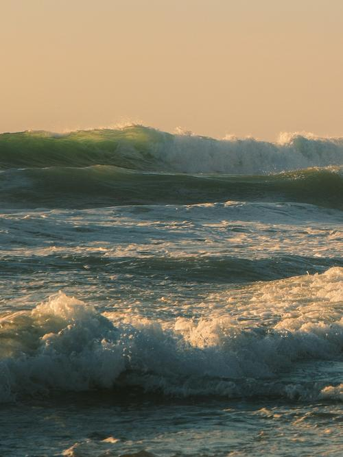
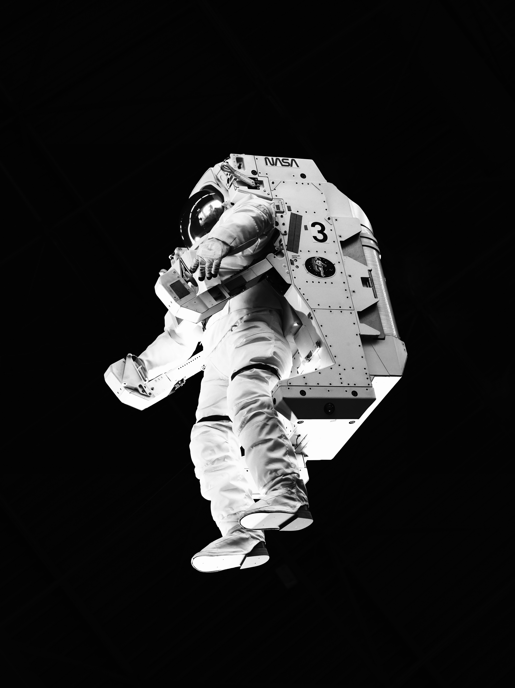
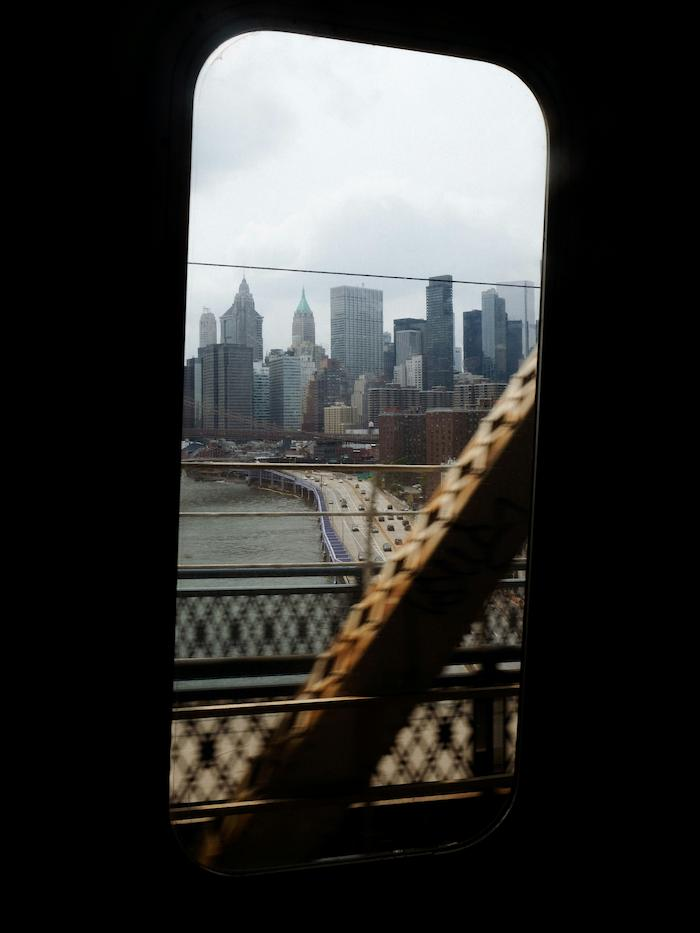
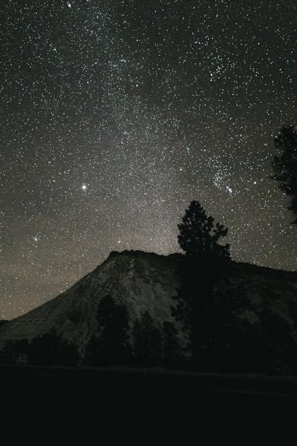

Это было самое начало пути. На этом этапе важно было проникнуться
основами и настроиться на учёбу. И, возможно, подумать, как новые
знания могут повлиять на ваше будущее.
Впереди неизведанный океан возможностей, и ты стоишь на берегу с
картой, которую только предстоит нарисовать.
1 спринт: Я — чистый лист
Мотивация
На первых этапах мы работали со страхами и сомнениями, которые
часто испытывают новички. Один из них — страх перед чистым листом.
Это, конечно же, намного сложнее, чем боязнь куска бумаги. Часто
за этим ощущением скрываются более глубокие вопросы: с чего
начать? а вдруг будет слишком сложно? что, если я не справлюсь?
Страх перед чистым листом — это тихий голос, который шепчет «ты не
сможешь», пока твои руки уже тянутся за клавиатуру, чтобы доказать
обратное.
1 спринт: А если не получится?
Принятие

Первый проект — позади! Но это всё ещё самое начало пути. Радость
могла быстро померкнуть и смениться ожиданием провала. Или вы,
наоборот, могли вдохновиться успехами и поверить в себя.
Первый проект — это как первый шаг в темноте: сердце стучит
громче, но именно этот шаг показывает, что путь под ногами
всё-таки есть.
2 спринт: Погоня за идеалом
Осознание

На этом этапе вы уже достаточно разбирались в основах вёрстки,
чтобы понять, как много ещё впереди. Вы могли попытаться погнаться
за идеалом и понять, что он недостижим. А, может, вы вовсе и не
подвержены перфекционизму и вместо того, чтобы сделать идеально,
старались просто сделать.
Осознание глубины профессии — это момент, когда восторг от первой
собранной мозаики встречается с видением целой галереи, которую
ещё предстоит создать.
2 спринт: О тех, кто рядом
Прокрастинация
Всё это время вы были не одиноки (хотя, возможно, иногда и
чувствовали, что одни против целого мира). Вас окружали
одногруппники, команда сопровождения и просто близкие люди,
которым можно пожаловаться, если очередной макет просто так не
поддавался. Осваивать что-то новое легче, когда рядом есть
единомышленники, не правда ли?
Это похоже на попытку ухватить ручей — вода ускользает сквозь
пальцы, пока не поймёшь, что нужно просто подставить ладони и
позволить ей течь.
3 спринт: Обходные стратегии
Продолжение

На этом курсе вы постоянно решали разные задачи. В какой-то момент
вам могло показаться, что решения просто иссякли. Значит, пришло
время посмотреть на задачу под другим углом.
Когда решения иссякают — это не тупик, а знак: пора отступить на
шаг, чтобы увидеть не задачу, а целую карту возможностей.
3 спринт: Когда опускаются руки
Преодоление

Во время учёбы часто возникает чувство, когда не знаешь, за что
хвататься. Вроде и проектную пора сдавать, и задачи хочется
порешать, и в теории получше разобраться, и жизнь не забыть
пожить. В такие моменты очень нужна концентрация. Вспомните,
откуда вы её черпали.
Это как пытаться удержать пять шаров в воздухе одновременно — пока
не поймёшь, что секрет не в том, чтобы ловить их все, а в том,
чтобы выбрать один и позволить остальным на миг замереть в полёте.
«Сейчас я здесь»
Свобода
Сейчас вы уже очень много знаете о вёрстке. Но это только начало.
Во-первых, впереди ещё много материала про «красотищу». Во-вторых,
с окончанием курса учёба не заканчивается. Вёрстка — это целый
мир. И этот мир постоянно меняется. Познать его полностью не
получится, но это тот случай, когда важен сам процесс познания.
Ведь часто путь — и есть результат.
Знание вёрстки — как созвездие на карте Вселенной: чем больше
звёзд отмечаешь, тем явственней видишь бесконечность неосвоенного
космоса, где сам полёт и есть награда.